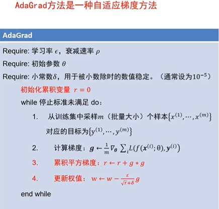
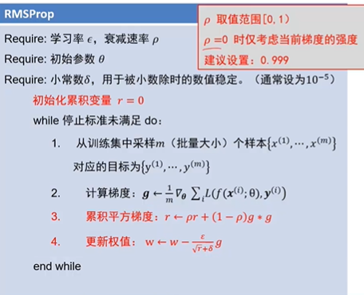
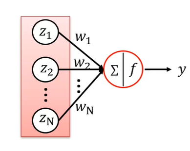

全连接神经网络
全连接神经网络组成
一个输入层、一个输出层以及多个隐层
输入层与输出层的神经元个数由任务决定，而隐层数量以及每个隐层的神经元个数需要人为指定
激活函数
激活函数是全连接神经网络中的一个重要部分，缺少了激活函数，全连接神经网络将退化为线性分类器。
常用的激活函数有：relu、tanh、sigmoid
网络结构设计
- 用不用隐层，用一个还是几个隐层？（深度设计）
- 每个隐层设置多少个神经元比较合适?（宽度设计）
结论：神经元个数越多，分界面就可以越复杂，在这个集合上的分类能力就越强
为什么一般的神经网络都需要两层全连接隐层，是因为第一层会提取同个类别的多个"不同角度"比如，头朝向、角度等等，这样分类更精准
损失函数
- softmax
将分类的预测值，变成概率（0-1之间）。
- 交叉熵
度量分类器预测分布与真实分布的距离
真实分布是 one-hot编码
- 交叉熵相关概念
- 熵$ H(p) = - \sum_xp(x)logp(x)$
- 交叉熵$ H(p, q) = - \sum_xp(x)logq(x)$
- 相对熵$ KL(p || q) = - \sum_xp(x)log\frac{q(x)}{p(x)}$
相对熵也叫KL散度；用来度量两个分布之间的不相似性——即p，q不可交换交叉熵会将预测正确的分数提高，其他分数降低，如下图所示，[10,9,9]还是预测准确，但还是有0.23损失，
三者之间的关系：
$$
\begin{align*}
H(p, q) =& - \sum_xp(x)logq(x) \
=& - \sum_xp(x)logp(x) - \sum_xp(x)log\frac{q(x)}{p(x)} \
=& H(p) + KL(p || q)
\end{align*}
$$
真实分布为one-hot编码时，交叉熵损失简化为$L_i = - log(q_j)\text{, 其中j为真实类别}$
什么是计算图？
计算图是一种有向图，它用来表达输入、输出以及中间变量之间得计算关系，图中的每个节点对应着一种数学运算。
正向计算得到变量之间的关系，反向计算可计算对应的梯度
- 前向计算的过程

- 反向计算的过程

即可通过上游梯度和局部梯度快速的得到当前梯度
计算图的颗粒度

如上图将常用的函数变为一个整体计算，增大了计算的颗粒度，简化计算，缺点：可能需要自己定义颗粒度。
计算图总结
- 任意复杂的函数，都可以用计算图的形式表示
- 在整个计算图中，每个门单位都会得到一些输入，然后，进行下面两个计算：
- a) 这个门的输出值
- b) 其输出值关于输入值的局部梯度
- 利用链式法则，门单位应该将回传的梯度乘以它对其的输入的局部梯度，从而得到整个网络的输出对该门单元的每个输入值的梯度。
再看激活函数
梯度消失
梯度消失是神经网络训练中非常致命的一个问题，其本质是由于链式法则的乘法特性导致的。即当中间一个结点的梯度为0时，后续的梯度也全为零。
sigmoid和tanh函数，也是因为梯度特性不好，才导致使用较少
梯度爆炸
其本质也是由于链式法则的乘法特性导致的。即当中间一个结点的梯度乘以学习率后得到一个非常大的值，从而“飞”出了合理区域，最终导致算法不收敛。
解决：把沿梯度方向前进的步长限制在某个值内就可避免。这个方法也叫梯度裁剪。
激活函数选择总结
尽量选择ReLU函数或者Leakly ReLU函数，相对于Sigmoid/tanh,ReLU函数或者leaklyReLU函数会让梯度流更加顺畅，训练过程收敛得更快。
梯度下降法存在的问题
损失函数特性：一个方向上变化迅速而在另一个方向上变化缓慢。
优化目标：从起点处走到底端笑脸处
梯度下降算法存在的问题：山壁间震荡，往谷低方向的行进较慢。
仅增大步长并不能加快算法收敛速度！
梯度算法改进

动量法还有什么效果？
现象：损失函数常具有不太好的局部最小值或鞍点(高维空间非常常见)梯度下降算法存在的问题：局部最小处与鞍点处梯度为0，算法无法通过。动量法的优势: 由于动量的存在算法可以冲出局部最小点以及鞍点，找到更优的解。
自适应梯度法
自适应梯度法利用梯度的平方来减少震荡方向步长，增大平坦方向步长。来减少震荡，加速通往谷底方向（设定不同的学习率来更改步长）
缺点：当累计过多时，r会过大，导致真实的学习率会过小。就有了改进的RMSProp方法
RMSProp

Adam
同时使用动量与自适应梯度思想
修正偏差：极大缓解算法初期的冷启动问题
训练过程
权值初始化
全零初始化：网络中不同的神经元有相同的输出，进行同样的参数更新；因此，这些神经元学到的参数都一样，等价于一个神经元。（没法训练）
随机初始化：使用随机数进行初始化，eg：权值采用N(0, 0.01)的高斯分布，N(0, 1)的高斯分布，等都会有问题
建议：采用随机初始化，避免全零初始化！
要求：
* 实验结论：初始化让权值不相等，并不能保证网络能够正常的被训练。
* 有效的初始化方法：使网络各层的激活值和局部梯度的方差在传播过程中尽量保持一致；以保持网络中正向和反向数据流动。
Xavier初始化
网络结构：10个隐层，1个输出层，每个隐层包含500个神经元，使用的双曲正切激活函数。
随机初始化：权值采样自$N(0, 1/N)$的高斯分布，$N$为输入神经元个数
一个神经元，其输入为$z_1,z_2,…,z_N$,这N个输入是独立同分布的；其权值为$w_1,w_2,…,w_N$。它们也是独立同分布的，且$w\text{与}z$是独立的；其激活函数为$f$；其最总输出$y$的表达式为：
$$
y = f(w_1 * z_1 + w_2 * z_2 + … + w_N * z_N)
$$

目标：使网络各层的激活值和局部梯度的方差在传播过程中尽量保持一致，即寻找w的分布使得输出y和输出z的方差一致。
HE初始化(MSRA)
网络结构：10个隐层，1个输出层，每个隐层包含500个神经元，使用的ReLU激活函数。
随机初始化：权值采样自$N(0, 2/N)$的高斯分布，$N$为输入神经元个数
权值初始化小结
- 好的初始化方法可以防止前向传播过程中的消息消失，也可以解决反向传递过程中的梯度消失。
- 激活函数选择双曲正切或者sigmoid时，建议使用Xaizer初始化方法；
- 激活函数选择ReLU或者Leakly ReLU时，建议使用He初始化方法；
批归一化(BN)
直接对神经元的输出进行批归一化
操作：对一批输出进行减均值除方差操作；可保证当前神经元的输出值的分布符合0均值1方差。
如果每一层的每个神经元进行批归一化，就能解决前向传递过程中的信号消失问题。
经常插入到全连接层后，非线性激活前

过拟合与欠拟合
解决方案
- 最优方案————获取更多的训练数据
- 次优方案————调节模型允许存储的信息量或者对模型允许存储的信息加以约束，该类方法也称为正则化。
- 调节模型大小
- 越苏模型权重，即权重正则化(常用的有L1、L2正则化)
- 随机失活(Dropout)
随机失活(Dropout)
随机失活: 让隐层的神经元以一定的概率不被激活。
实现方式：训练过程中，对某一层使用Dropout，就是随机将该层的一些输出舍弃(输出值设为0)，这些被舍弃的神经元就好像被网络删除了一样。
随机失活比率：是被设定为0的特征所占的比例，通常在0.2————0.5范围内。
为什么随机失活能够防止过拟合？
解释1：随机失火使得每次更新梯度时参与计算的网络参数减少了，降低了模型容量，所以能防止过拟合。
解释2：随机失活鼓励重分散，从这个角度来看随机失活也能起到正则化的作用，进而防止过拟合。（即失活前，可能每个神经元只学习单一的特征例如眼睛、鼻子等，失活后，神经元个数减少所以每个神经元学的的特征会变多，不再是单一特征）
解释3：随机失活可以看成模型集成
神经网络中的超参数
超参数：
* 网络结构————隐层神经元个数，网络层数，非线性单元选择等
* 优化相关————学习率、dropout比率、正则项强度等
常用超参数优化方法
- 网格搜索法：
①每个超参数分别取几个值)组合这些超参数值，形成多组超参数;
②(在验证集上评估每组超参数的模型性能;
③选择性能最优的模型所采用的那组值作为最终的超参数的值。 - 随机搜索法：
①参数空间内随机取点，每个点对应一组超参数;
②在验证集上评估每组超参数的模型性能;
③选择性能最优的模型所采用的那组值作为最终的超参数的值。
- 网格搜索法：
超参数搜索策略：
- 粗搜索：使用随机法在交大范围采样，训练一个周期，依次缩小超参数范围。
- 精搜索：利用随机法在粗搜索后的范围内采样，运行模型五到十个周期，选择验证集上精度最高的那组超参数。
对于学习率、正则项强度这类超参数，在对数空间上进行随机采样更合适！（不敏感）即：0.0001， 0.001，0.01，0.1，1